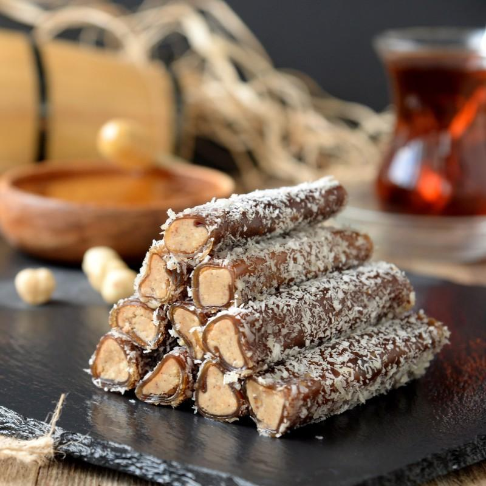

Pestil is a Turkish sweet made from pulverized fruits – most commonly apricots - that are spread in a thin layer, then left to dry. After the mass has dried, it is cut into smaller pieces. Pestil is also known as fruit leather due to its typical texture.
Meal prep time : 10 hours
Servings : 12